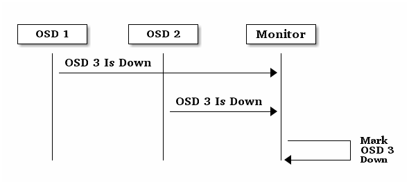
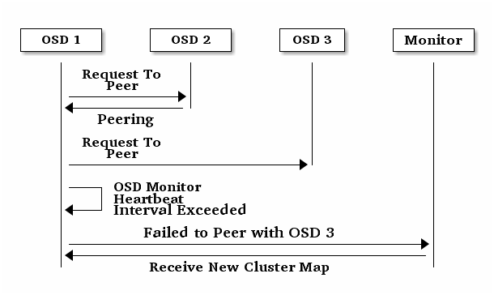
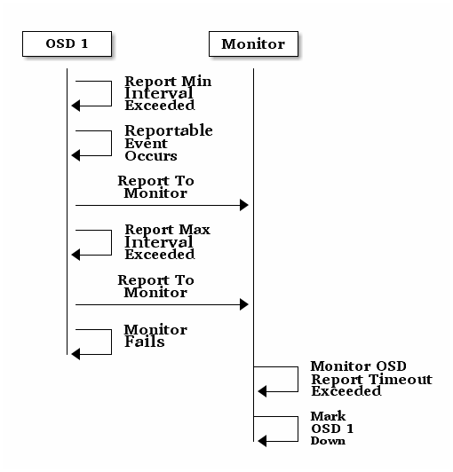

监视器与 OSD 交互的配置¶
（心跳配置）
完成基本配置后就可以部署、运行 Ceph 了。执行 ceph health
或 ceph -s 命令时，监视器会报告
Ceph 存储集群的当前状态。监视器通过让各 OSD
自己报告、并接收 OSD 关于邻居状态的报告来掌握集群动态。如果监视器没收到报告，或者它只收到集群的变更报告，那它就要更新集群运行图。
关于监视器与 OSD 的交互 Ceph 提供了合理的默认值，然而你可以覆盖它们。下面几段从集群监控角度描述了 Ceph 监视器与 OSD 如何交互。
OSD 验证心跳¶
各 OSD 每 6 秒会与其他 OSD 守护进程进行心跳检查，用 [osd]
段下的 osd heartbeat interval 可更改此间隔、或运行时更改。如果一个邻近的 OSD 在 20 秒的宽限期内都没有心跳，就把这个邻近
OSD 的状态标记为 down 、并上报给监视器，它会更新 Ceph 集群运行图。这个宽限期可以用 Ceph 配置文件的 [mon] 和 [osd]
段（同时配置）、或 [global] 段下的 osd heartbeat grace
选项更改、或者在运行时更改。

OSD 报告死亡 OSD¶
在默认配置下，必须有两个来自不同主机的 Ceph OSD 守护进程向监视器报告了另一个 OSD 守护进程倒下（ down ）的消息，此时监视器才会确认那个报告所指的 OSD 倒下了。但是有可能报告这个错误的所有 OSD 都位于同一机架上、连着一个有问题的交换机，导致它们与另一个 OSD 的连接有问题；为避免此类误报，我们把报告这个错误的互联点们当作一个代理点，代理这部分滞后情况差不多的嫌疑“子集群”（相对于整个集群）。很明显，它不可能百发百中，但是遇到了就能帮我们把只需轻微修正的控制在遇挫系统的一个子集内。
mon osd reporter subtree level 选项可用于分组互联点，也就是按照它们在 CRUSH 图里的共同父级把这些节点分组为“子集群”；按默认配置，只需要有两个来自不同子树的报告就可以证明另一个 OSD 守护进程倒下了。你可以更改来自独立子树的报告者数量、以及要求的共同父级类型（向 Ceph 监视器报告某个 OSD 倒下时会被采纳），在 Ceph 配置文件的 [mon] 段下增加 mon osd min down reporters
和 mon osd reporter subtree level 即可，或者更改运行时配置。

OSD 报告互联失败¶
如果一 OSD 守护进程不能和配置文件中定义的任何 OSD 建立连接，它会每 30 秒向监视器索要一次最新集群运行图，你可以在 [osd]
下设置 osd mon heartbeat interval 来更改这个心跳间隔，或者运行时更改。

OSD 报告自己的状态¶
如果一 OSD 在 mon osd report timeout 时间内没向监视器报告过，监视器就认为它 down 了。在 OSD 守护进程会向监视器报告某些事件，如某次操作失败、归置组状态变更、 up_thru 变更、或它将在 5 秒内启动。你可以设置 [osd] 下的 osd mon report interval 来更改最小报告间隔，或在运行时更改。 OSD 守护进程每 120 秒会向监视器报告其状态，不论是否有值得报告的事件。在 [osd] 段下设置 osd mon report interval max
可更改 OSD 报告间隔，或运行时更改。

配置选项¶
心跳选项应该置于配置文件的 [global] 段下。
监视器选项¶
mon osd min up ratio
- 描述
在把 OSD 标记为
down前，保持处于up状态的 OSD 最小比例。- 类型
Double
- 默认值
.3
mon osd min in ratio
- 描述
在把 OSD 标记为
out前，保持处于in状态的 OSD 最小比例。- 类型
Double
- 默认值
.75
mon osd laggy halflife
- 描述
滞后量消退时间，秒。
- 类型
Integer
- 默认值
60*60
mon osd laggy weight
- 描述
滞后量消退时新样本的权重。
- 类型
Double
- 默认值
0.3
mon osd laggy max interval
- 描述
滞后量中
laggy_interval的最大值，单位为秒。监视器用一种自适应方法来评估某个 OSD 的laggy_interval，计算这个 OSD 的宽限时间要用到此值。- 类型
Integer
- 默认值
300
mon osd adjust heartbeat grace
- 描述
设置为
true时， Ceph 将根据滞后量伸缩。- 类型
Boolean
- 默认值
true
mon osd adjust down out interval
- 描述
设置为
true时， Ceph 将根据滞后量伸缩。- 类型
Boolean
- 默认值
true
mon osd auto mark in
- 描述
Ceph 将把任何启动中的 OSD 标记为在集群中（
in）。- 类型
Boolean
- 默认值
false
mon osd auto mark auto out in
- 描述
把正在启动、且被自动标记为
out状态的 OSD 标记为in。- 类型
Boolean
- 默认值
true
mon osd auto mark new in
- 描述
把正在启动的新 OSD 标记为
in。- 类型
Boolean
- 默认值
true
mon osd down out interval
- 描述
在 OSD 停止响应多少秒后把它标记为
down且out。- 类型
32-bit Integer
- 默认值
600
mon osd down out subtree limit
- 描述
Ceph 不会自动标记为 out 的最小 CRUSH 单元类型。例如，如果设置为
host，且某一主机上的所有 OSD 都离线了， Ceph 也不会自动把这些 OSD 标记为 out 。- 类型
String
- 默认值
rack
mon osd report timeout
- 描述
宣布无响应 OSD
down前的宽限期，秒。- 类型
32-bit Integer
- 默认值
900
mon osd min down reporters
- 描述
确定一 OSD 状态为
down的最少报告来源 OSD 数。- 类型
32-bit Integer
- 默认值
2
mon osd reporter subtree level
- 描述
哪个父级桶内的报告者可计算在内。 OSD 们如果发现与它互联的 OSD 没响应了，会向监视器报告；监视器会把报告所指的 OSD 标记为 out 、过了宽限期再标记为 down 。
- 类型
String
- 默认值
host
OSD 选项¶
osd heartbeat address
- 描述
OSD 用于心跳的网络地址。
- 类型
Address
- 默认值
此主机的地址。
osd heartbeat interval
- 描述
一 OSD 探测邻居的频率，秒。
- 类型
32-bit Integer
- 默认值
6
osd heartbeat grace
- 描述
OSD 多久没心跳就会被集群认为它挂（
down）了。此选项必须在 [mon] 和 [osd] 段下同时设置、或者在 [global] 段下设置，因为 MON 和 OSD 都得配置才能生效。- 类型
32-bit Integer
- 默认值
20
osd mon heartbeat interval
- 描述
OSD 没有邻居时多久探测一次监视器。
- 类型
32-bit Integer
- 默认值
30
osd mon heartbeat stat stale
- 描述
心跳状态这么长时间都没更新就停止有关它的报告。设置为 0 可以禁用此行为。
- 类型
32-bit Integer
- 默认值
3600
osd mon report interval
- 描述
从一个 Ceph OSD 守护进程启动或其它可报告事件发生以来，多长时间内必须向监视器报告一次。单位为秒。
- 类型
32-bit Integer
- 默认值
5
osd mon ack timeout
- 描述
OSD 等待监视器提供统计信息的时间，秒。
- 类型
32-bit Integer
- 默认值
30